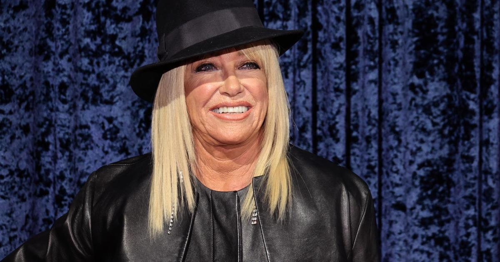

Suzanne Somers had long battle with breast cancer before deathPHILADELPHIA (CBS) -- after a long battle with breast cancer. Somers wrote a number of health and wellness books and she was very public about some of her controversial medical decisions Somers played the cheerful blonde on the TV show "Three's Company" until she was fired after demanding equal pay. She went on to star in many other roles and said she made millions with the ThighMaster, a personal fitness device. Somers was first diagnosed with breast cancer in 2000. She initially embraced organic nontraditional therapies. "We women are the sickest women in the world in the United States from excessive chemicalization," Somers previously said. But research shows for treating aggressive cancer chemotherapy, a combination of toxic chemicals, is proven to work. "We all know that chemotherapy has its own side effects but it's something that's been shown to extend the duration of life and actually improve the quality of life," Dr. Deborah Butzbach of Virtua Health said. Dr. Butzbach, an oncologist with Virtua, said there's not a lot of science on organic cancer treatments "There's very little in the world of alternative medicine that's been proven and validated," Dr. Butzbach said. Somers, who was eventually treated with traditional therapies, advocated using bio-identical hormones, estrogen, progesterone and testosterone to fight aging after menopause. "Hormones do increase our risk of breast cancer in a small percentage of people," Dr. Butzbach said. "But there are also significant benefits improving quality of life." Somers said she was at peace with her decisions and will be remembered for her courageous decades-long fight against cancer. Doctors said decisions about hormone therapy and cancer treatments are very personal and individualized decisions that are best made consulting with doctors. |
 |